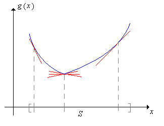
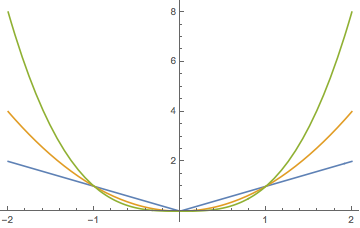
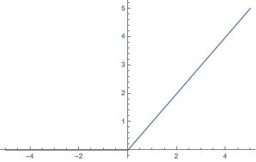

As in the introduction, we start with a stochastic process \( \bs{X} = \{X_t: t \in T\} \) on an underlying probability space \( (\Omega, \mathscr{F}, \P) \), having state space \( \R \), and where the index set \( T \) (representing time) is either \( \N \) (discrete time) or \( [0, \infty) \) (continuous time). Next, we have a filtration \(\mathfrak{F} = \{\mathscr{F}_t: t \in T\} \), and we assume that \( \bs{X} \) is adapted to \( \mathfrak{F} \). So \( \mathfrak{F} \) is an increasing family of sub \( \sigma \)-algebras of \( \mathscr{F} \) and \( X_t \) is measurable with respect to \( \mathscr{F}_t \) for \( t \in T \). We think of \( \mathscr{F}_t \) as the collection of events up to time \( t \in T \). We assume that \( \E\left(\left|X_t\right|\right) \lt \infty \), so that the mean of \( X_t \) exists as a real number, for each \( t \in T \). Finally, in continuous time where \( T = [0, \infty) \), we make the standard assumptions that \( \bs X \) is right continuous and has left limits, and that the filtration \( \mathfrak F \) is right continuous and complete. Please recall the following from the introduction:
Definitions
Our goal in this section is to give a number of basic properties of martingales and to give ways of constructing martingales from other types of processes. The deeper, fundamental theorems will be studied in the following sections.
Our first result is that the martingale property is preserved under a coarser filtration.
Suppose that the process \( \bs X \) and the filtration \( \mathfrak F \) satisfy the basic assumptions above and that \( \mathfrak G \) is a filtration coarser than \( \mathfrak F \) so that \( \mathscr{G}_t \subseteq \mathscr{F}_t \) for \( t \in T \). If \( \bs X \) is a martingale (sub-martingale, super-martingale) with respect to \( \mathfrak F \) and \( \bs X \) is adapted to \( \mathfrak G \) then \( \bs X \) is a martingale (sub-martingale, super-martingale) with respect to \( \mathfrak G \).
Suppose that \( s, \, t \in T \) with \( s \le t \). The proof uses the tower and increasing properties of conditional expected value, and the fact that \( \bs X \) is adapted to \( \mathfrak G \)
In particular, if \( \bs{X} \) is a martingale (sub-martingale, super-martingale) with respect to some filtration, then it is a martingale (sub-martingale, super-martingale) with respect to its own natural filtration.
The relations that define martingales, sub-martingales, and super-martingales hold for the ordinary (unconditional) expected values. We had this result in the last section, but it's worth repeating.
Suppose that \( s, \, t \in T \) with \( s \le t \).
The results follow directly from the definitions, and the critical fact that \( \E\left[\E\left(X_t \mid \mathscr{F}_s\right)\right] = \E(X_t) \) for \( s, \, t \in T \).
So if \( \bs X \) is a martingale then \( \bs X \) has constant expected value, and this value is referred to as the mean of \( \bs X \). The martingale properties are preserved under sums of the stochastic processes.
For the processes \( \bs{X} = \{X_t: t \in T\} \) and \( \bs{Y} = \{Y_t: t \in T\} \), let \( \bs{X} + \bs{Y} = \{X_t + Y_t: t \in T\} \). If \( \bs X \) and \( \bs Y \) are martingales (sub-martingales, super-martinagles) with respect to \( \mathfrak F \) then \( \bs X + \bs Y \) is a martingale (sub-martingale, super-martinagle) with respect to \( \mathfrak F \).
The results follow easily from basic properties of expected value and conditional expected value. First note that \( \E\left(\left|X_t + Y_t\right|\right) \le \E\left(\left|X_t\right|\right) + \E\left(\left|Y_t\right|\right) \lt \infty \) for \( t \in T \). Next \( \E(X_t + Y_t \mid \mathscr{F}_s) = \E(X_t \mid \mathscr{F}_s) + \E(Y_t \mid \mathscr{F}_s)\) for \( s, \, t \in T \) with \( s \le t \).
The sub-martingale and super-martingale properties are preserved under multiplication by a positive constant and are reversed under multiplication by a negative constant.
For the process \( \bs{X} = \{X_t: t \in T\} \) and the constant \( c \in \R \), let \( c \bs{X} = \{c X_t: t \in T\} \).
The results follow easily from basic properties of expected value and conditional expected value. First note that \( \E\left(\left|c X_t \right|\right) = |c| \E\left(\left|X_t\right|\right) \lt \infty \) for \( t \in T \). Next \( \E(c X_t \mid \mathscr{F}_s) = c \E(X_t \mid \mathscr{F}_s) \) for \( s, \, t \in T \) with \( s \le t \).
Property (a) in , together with the previous additive property, means that the collection of martingales with respect to a fixed filtration \( \mathfrak F \) forms a vector space. Here is a class of transformations that turns martingales into sub-martingales.
Suppose that \( \bs X \) takes values in an interval \( S \subseteq \R \) and that \( g: S \to \R \) is convex with \( \E\left[\left|g(X_t)\right|\right] \lt \infty \) for \( t \in T \). If either of the following conditions holds then \( g(\bs X) = \{g(X_t): t \in T\} \) is a sub-martingale with respect to \( \mathfrak F \):
The proof uses Jensen's inequality for conditional expected value. If \( s, \, t \in T \) with \( s \le t \) then since \( g \) is convex, \[ \E\left[g(X_t) \mid \mathscr{F}_s\right] \ge g\left[\E(X_t \mid \mathscr{F}_s)\right] \]

Here is the most important special case of :
Suppose again that \( \bs X \) is a martingale with respect to \( \mathfrak F \). Let \( k \in [1, \infty) \) and suppose that \( \E\left(|X_t|^k\right) \lt \infty \) for \( t \in T \). Then the process \( |\bs X|^k = \left\{\left|X_t\right|^k: t \in T\right\} \) is a sub-martingale with respect to \( \mathfrak F \)
For \( k \in [1, \infty) \), the function \( x \mapsto |x|^k \) is convex on \( \R \).

In particular, if \( \bs X \) is a martingale relative to \( \mathfrak F \) then \( |\bs X| = \{|X_t|: t \in T\} \) is a sub-martingale relative to \( \mathfrak F \). Here is a related result that we will need later. First recall that the positive and negative parts of \( x \in \R \) are \( x^+ = \max\{x, 0\} \) and \( x^- = \max\{-x, 0\} \), so that \( x^+ \ge 0 \), \( x^- \ge 0 \), \( x = x^+ - x^- \), and \( |x| = x^+ + x^- \).

If \( \bs X = \{X_t: t \in T\} \) is a sub-martingale relative to \( \mathfrak F = \{\mathscr{F}_t: t \in T\}\) then \( \bs{X}^+ = \{X_t^+: t \in T\} \) is also a sub-martingale relative to \( \mathfrak F \).
As shown in the graph above, the function \( x \mapsto x^+ \) is increasing and convex on \( \R \).
Our last result of this discussion is that if we sample a continuous-time martingale at an increasing sequence of time points, we get a discrete-time martingale.
Suppose again that the process \( \bs X = \{X_t: t \in [0, \infty)\} \) and the filtration \( \mathfrak F = \{\mathscr{F}_t: t \in [0, \infty)\} \) satisfy the basic assumptions in . Suppose also that \( \{t_n: n \in \N\} \subset [0, \infty) \) is a strictly increasing sequence of time points with \( t_0 = 0 \), and define \( Y_n = X_{t_n} \) and \( \mathscr{G}_n = \mathscr{F}_{t_n} \) for \( n \in \N \). If \( \bs X \) is a martingale (sub-martingale, super-martingale) with respect to \( \mathfrak F \) then \( \bs Y = \{Y_n: n \in \N\} \) is a martingale (sub-martingale, super-martingale) with respect to \( \mathfrak G \).
Since the time points are increasing, it's clear that \( \mathfrak G \) is a discrete-time filtration. Next, \( \E(|Y_n|) = \E\left(\left|X_{t_n}\right|\right) \lt \infty \). Finally, suppose that \( \bs X \) is a martingale and \( n, \, k \in \N \) with \( k \lt n \). Then \( t_k \lt t_n \) so \[ \E(Y_n \mid \mathscr{G}_k) = \E\left(X_{t_n} \mid \mathscr{F}_{t_k}\right) = X_{t_k} = Y_k \] Hence \( \bs Y \) is also a martingale. The proofs for sub and super-martingales are similar, but with inequalities replacing the second equality.
This result is often useful for extending proofs of theorems in discrete time to continuous time.
Our next discussion, in discrete time, shows how to build a new martingale from an existing martingale and an predictable process. This construction turns out to be very useful, and has an interesting gambling interpretation. To review the definition, recall that \( \{Y_n: n \in \N_+\} \) is predictable relative to the filtration \( \mathfrak F = \{\mathscr{F}_n: n \in \N\} \) if \( Y_n\) is measurable with respect to \(\mathscr{F}_{n-1} \) for \( n \in \N_+ \). Think of \( Y_n \) as the bet that a gambler makes on game \( n \in \N_+ \). The gambler can base the bet on all of the information she has at that point, including the outcomes of the previous \( n - 1 \) games. That is, she can base the bet on the information encoded in \( \mathscr{F}_{n-1} \).
Suppose that \( \bs X = \{X_n: n \in \N\} \) is adapted to the filtration \( \mathfrak F = \{\mathscr{F}_n: n \in \N\} \) and that \( \bs Y = \{Y_n: n \in \N_+\} \) is predictable relative to \( \mathfrak F \). The transform of \( \bs X \) by \( \bs Y \) is the process \( \bs Y \cdot \bs X \) defined by \[ (\bs Y \cdot \bs X)_n = X_0 + \sum_{k=1}^n Y_k (X_k - X_{k-1}), \quad n \in \N \]
The motivating example behind the transfrom, in terms of a gambler making a sequence of bets, is given in . Note that \( \bs Y \cdot \bs X \) is also adapted to \( \mathfrak F \). Note also that the transform depends on \( \bs X \) only through \( X_0 \) and \( \{X_n - X_{n-1}: n \in \N_+\} \). If \( \bs X \) is a martingale, this sequence is the martingale difference sequence studied introduction.
Suppose \( \bs X = \{X_n: n \in \N\} \) is adapted to the filtration \( \mathfrak F = \{\mathscr{F}_n: n \in \N\} \) and that \( \bs{Y} = \{Y_n: n \in \N\} \) is a bounded process, predictable relative to \( \mathfrak{F} \).
Suppose that \( |Y_n| \le c \) for \( n \in \N \) where \( c \in (0, \infty) \). Then \[ \E(|(\bs Y \cdot \bs X)_n|) \le \E(|X_0|) + c \sum_{k=1}^n [\E(|X_k|) + \E(|X_{k-1}|)] \lt \infty, \quad n \in \N \] Next, for \( n \in \N \), \begin{align*} \E\left[(\bs Y \cdot \bs X)_{n+1} \mid \mathscr{F}_n\right] &= \E\left[(\bs Y \cdot \bs X)_n + Y_{n+1} (X_{n+1} - X_n) \mid \mathscr{F}_n\right] = (\bs Y \cdot \bs X)_n + Y_{n+1} \E\left(X_{n+1} - X_n \mid \mathscr{F}_n\right)\\ & = (\bs Y \cdot \bs X)_n + Y_{n+1} [\E(X_{n+1} \mid \mathscr{F}_n) - X_n] \end{align*} since \( (\bs Y \cdot \bs X)_n \), \( Y_{n+1} \) and \( X_n \) are \( \mathscr{F}_n \)-measurable. The results now follow from the definitions of martingle, sub-martingale, and super-martingale.
The construction in is known as a martingale transform, and is a discrete version of the stochastic integral that we will study in the chapter on Brownian motion. The result also holds if instead of \( \bs Y \) being bounded, we have \( \bs X \) bounded and \( \E(|Y_n|) \lt \infty \) for \( n \in \N_+ \)
The next result, in discrete time, shows how to decompose a basic stochastic process into a martingale and a predictable process. The result is known as the Doob decomposition theorem and is named for Joseph Doob who developed much of the modern theory of martingales.
Suppose that \( \bs X = \{X_n: n \in \N\} \) satisfies the basic assumptions in above relative to the filtration \( \mathfrak F = \{\mathscr{F}_n: n \in \N\} \). Then \( X_n = Y_n + Z_n \) for \( n \in \N \) where \( \bs Y = \{Y_n: n \in \N\} \) is a martingale relative to \( \mathfrak F \) and \( \bs Z = \{Z_n: n \in \N\} \) is predictable relative to \( \mathfrak F \). The decomposition is unique.
Recall that the basic assumptions mean that \( \bs X = \{X_n: n \in \N\} \) is adapted to \( \mathfrak F \) and \( \E(|X_n|) \lt \infty \) for \( n \in \N \). Define \( Z_0 = 0 \) and \[ Z_n = \sum_{k=1}^n \left[\E(X_k \mid \mathscr{F}_{k-1}) - X_{k-1}\right], \quad n \in \N_+ \] Then \( Z_n \) is measurable with respect to \( \mathscr{F}_{n-1} \) for \( n \in \N_+ \) so \( \bs Z \) is predictable with respect to \( \mathfrak F \). Now define \[ Y_n = X_n - Z_n = X_n - \sum_{k=1}^n \left[\E(X_k \mid \mathscr{F}_{k-1}) - X_{k-1}\right], \quad n \in \N \] Then \( \E(|Y_n|) \lt \infty \) and trivially \( X_n = Y_n + Z_n \) for \( n \in \N \). Next, \begin{align*} \E(Y_{n+1} \mid \mathscr{F}_n) & = \E(X_{n+1} \mid \mathscr{F}_n) - Z_{n+1} = \E(X_{n+1} \mid \mathscr{F}_n) - \sum_{k=1}^{n+1} \left[\E(X_k \mid \mathscr{F}_{k-1}) - X_{k-1}\right] \\ & = X_n - \sum_{k=1}^n \left[\E(X_k \mid \mathscr{F}_{k-1}) - X_{k-1}\right] = Y_n, \quad n \in \N \end{align*} Hence \( \bs Y \) is a martingale. Conversely, suppose that \( \bs X \) has the decomposition in terms of \( \bs Y \) and \( \bs Z \) given in the theorem. Since \( \bs Y \) is a martingale and \( \bs Z \) is predictable, \begin{align*} \E(X_n - X_{n-1} \mid \mathscr{F}_{n-1}) & = \E(Y_n \mid \mathscr{F}_{n-1}) - \E(Y_{n-1} \mid \mathscr{F}_{n-1}) + \E(Z_n \mid \mathscr{F}_{n-1}) - \E(Z_{n-1} \mid \mathscr{F}_{n-1}) \\ & = Y_{n-1} - Y_{n-1} + Z_n - Z_{n-1} = Z_n - Z_{n-1}, \quad n \in \N_+ \end{align*} Also \( Z_0 = 0 \) so \( \bs X \) uniquely determines \( \bs Z \). But \( Y_n = X_n - Z_n \) for \( n \in \N \), so \( \bs X \) uniquely determines \( \bs Y \) also.
A decomposition of this form is more complicated in continuous time, in part because the definition of a predictable process is more subtle and complex. The decomposition theorem holds in continuous time, with our basic assumptions and the additional assumption that the collection of random variables \( \{X_\tau: \tau \text{ is a finite-valued stopping time}\} \) is uniformly integrable. The result is known as the Doob-Meyer decomposition theorem, named additionally for Paul Meyer.
As you might guess, there are important connections between Markov processes and martingales. Suppose that \( \bs X = \{X_t: t \in T\} \) is a (homogeneous) Markov process with state space \( (S, \mathscr{S}) \), relative to the filtration \( \mathfrak F = \{\mathscr{F}_t: t \in T\} \). Let \( \bs P = \{P_t: t \in T\} \) denote the collection of transition kernesl of \( \bs X \), so that \[ P_t(x, A) = \P(X_t \in A \mid X_0 = x), \quad x \in S, A \in \mathscr{S} \] Recall that (like all probability kernels), \( P_t \) operates (on the right) on (measurable) functions \( h: S \to \R \) by the rule \[ P_t h(x) = \int_S P_t(x, dy) h(y) = \E[h(X_t) \mid X_0 = x], \quad x \in S \] assuming as usual that the expected value exists. Here is the critical definition that we will need.
Suppose that \( h: S \to \R \) and that \( \E[|h(X_t)|] \lt \infty \) for \( t \in T \).
The following theorem gives the fundamental connection between the two types of stochastic processes. Given the similarity in the terminology, the result may not be a surprise.
Suppose that \( h: S \to \R \) and \( \E[\left|h(X_t)\right|] \lt \infty \) for \( t \in T \). Define \( h(\bs X) = \{h(X_t): t \in T\} \).
Suppose that \( s,\, t \in T \) with \( s \le t \). Then by the Markov property, \[ \E[h(X_t) \mid \mathscr{F}_s] = \E[h(X_t) \mid X_s] = P_{t-s} h(X_s) \] So if \( h \) is harmonic, \( \E[h(X_t) \mid \mathscr{F}_s] = h(X_s) \) so \( \{h(X_t): t \in T\} \) is a martingale. Conversely, if \( \{h(X_t): t \in T\} \) is a martingale, then \( P_{t-s}h(X_s) = h(X_s) \). Letting \( s = 0 \) and \( X_0 = x \) gives \( P_t h(x) = h(x) \) so \( h \) is harmonic. The proofs for sub and super-martingales are similar, with inequalities replacing the equalities.
Several of the examples given in the introduction can be re-interpreted in the context of harmonic functions of Markov chains. We explore some of these below.
Let \( \mathscr{R} \) denote the usual set of Borel measurable subsets of \( \R \), and for \( A \in \mathscr{R} \) and \( x \in \R \) let \( A - x = \{y - x: y \in A\} \). Let \( I \) denote the identity function on \( \R \), so that \( I(x) = x \) for \( x \in \R \). We will need this notation in a couple of our applications below.
Suppose that \( \bs V = \{V_n: n \in \N\} \) is a sequence of independent, real-valued random variables, with \( \{V_n: n \in \N_+\} \) identically distributed and having common probability measure \( Q \) on \( (\R, \mathscr{R}) \) and mean \( a \in \R \). Recall from the introduction that the partial sum process \( \bs X = \{X_n: n \in \N\} \) associated with \( \bs V \) is given by \[ X_n = \sum_{i=0}^n V_i, \quad n \in \N \] and that \( \bs X \) is a (discrete-time) random walk. But \( \bs X \) is also a discrete-time Markov process with one-step transition kernel \( P \) given by \( P(x, A) = Q(A - x) \) for \( x \in \R \) and \( A \in \mathscr{R} \).
The identity function \( I \) is
Note that \[ PI(x) = \E(X_1 \mid X_0 = x) = x + \E(X_1 - X_0 \mid X_0 = x) = x + \E(V_1 \mid X_0 = x) = I(x) + a \ \] Since \( V_1 \) and \( X_0 = V_0 \) are independent. The results now follow from the definitions.
It now follows from that \( \bs X \) is a martingale if \( a = 0 \), a sub-martingale if \( a \gt 0 \), and a super-martingale if \( a \lt 0 \). We showed these results directly from the definitions in the introduction.
Suppose now that that \( \bs{V} = \{V_n: n \in \N\} \) is a sequence of independent random variables with \( \P(V_i = 1) = p \) and \( \P(V_i = -1) = 1 - p \) for \( i \in \N_+ \), where \( p \in (0, 1) \). Let \( \bs{X} = \{X_n: n \in \N\} \) be the partial sum process associated with \( \bs{V} \) so that \[ X_n = \sum_{i=0}^n V_i, \quad n \in \N \] Then \( \bs{X} \) is the simple random walk with parameter \( p \). In terms of gambling, our gambler plays a sequence of independent and identical games, and on each game, wins €1 with probability \( p \) and loses €1 with probability \( 1 - p \). So if \( X_0 \) is the gambler's initial fortune, then \( X_n \) is her net fortune after \( n \) games. In the introduction we showed that \( \bs X \) is a martingale if \( p = \frac{1}{2} \), a super-martingale if \( p \lt \frac{1}{2} \), and a sub-martingale if \( p \gt \frac{1}{2} \). But suppose now that instead of making constant unit bets, the gambler makes bets that depend on the outcomes of previous games. This leads to a martingale transform as in .
Suppose that the gambler bets \( Y_n \) on game \( n \in \N_+ \) (at even stakes), where \( Y_n \in [0, \infty) \) depends on \( (V_0, V_1, V_2, \ldots, V_{n-1}) \) and satisfies \( \E(Y_n) \lt \infty \). So the process \( \bs Y = \{Y_n: n \in \N_+\} \) is predictable with respect to \( \bs X \), and the gambler's net winnings after \( n \) games is \[ (\bs Y \cdot \bs X)_n = V_0 + \sum_{k=1}^n Y_k V_k = X_0 + \sum_{k=1}^n Y_k (X_k - X_{k-1}) \]
The simple random walk \( \bs X \) is also a discrete-time Markov chain on \( \Z \) with one-step transition matrix \( P \) given by \( P(x, x + 1) = p \), \( P(x, x - 1) = 1 - p \).
The function \( h \) given by \( h(x) = \left(\frac{1 - p}{p}\right)^x \) for \( x \in \Z \) is harmonic for \( \bs X \).
For \( x \in \Z \), \begin{align*} P h(x) & = p h(x + 1) + (1 - p) h(x - 1) = p \left(\frac{1 - p}{p}\right)^{x+1} + (1 - p) \left(\frac{1 - p}{p}\right)^{x-1} \\ & \frac{(1 - p)^{x + 1}}{p^x} + \frac{(1 - p)^x}{p^{x-1}} = \left(\frac{1 - p}{p}\right)^x [(1 - p) + p] = h(x) \end{align*}
It now follows from that the process \( \bs Z = \{Z_n: n \in \N\} \) given by \( Z_n = \left(\frac{1 - p}{p}\right)^{X_n} \) for \( n \in \N \) is a martingale. We showed this directly from the definition in the introduction. As you may recall, this is De Moivre's martingale and named for Abraham De Moivre.
Recall the discussion of the simple branching process from the introduction. The fundamental assumption is that the particles act independently, each with the same offspring distribution on \( \N \). As before, we will let \( f \) denote the (discrete) probability density function of the number of offspring of a particle, \( m \) the mean of the distribution, and \( \phi \) the probability generating function of the distribution. We assume that \( f(0) \gt 0 \) and \( f(0) + f(1) \lt 1 \) so that a particle has a positive probability of dying without children and a positive probability of producing more than 1 child. Recall that \( q \) denotes the probability of extinction, starting with a single particle.
The stochastic process of interest is \( \bs{X} = \{X_n: n \in \N\} \) where \( X_n \) is the number of particles in the \( n \)th generation for \( n \in \N \). Recall that \( \bs{X} \) is a discrete-time Markov chain on \( \N \) with one-step transition matrix \( P \) given by \( P(x, y) = f^{* x}(y) \) for \( x, \, y \in \N \) where \( f^{*x} \) denotes the convolution power of order \( x \) of \( f \).
The function \( h \) given by \( h(x) = q^x \) for \( x \in \N \) is harmonic for \( \bs X \).
For \( x \in \N \), \[ Ph(x) = \sum_{y \in \N} P(x, y) h(y) = \sum_{y \in \N} f^{*x}(y) q^y \] The last expression is the probability generating function of \( f^{*x} \) evaluated at \( q \). But this PGF is simply \( \phi^x \) and \( q \) is a fixed point of \( \phi \) so we have \[ Ph(x) = [\phi(q)]^x = q^x = h(x) \]
It now follows from that the process \( \bs Z = \{Z_n: n \in \N\} \) is a martingale where \( Z_n = q^{X_n} \) for \( n \in \N \). We showed this directly from the definition in the introduction. We also showed that the process \( \bs Y = \{Y_n: n \in \N\} \) is a martingale where \( Y_n = X_n / m^n \) for \( n \in \N \). But we can't write \( Y_n = h(X_n) \) for a function \( h \) defined on the state space, so we can't interpret this martingale in terms of a harmonic function.
Suppose that \( \bs X = \{X_t: t \in T\} \) is a stochastic process satisfying the basic assumptions in above relative to the filtration \( \mathfrak F = \{\mathscr{F}_t: t \in T\} \). Recall from the introduction that the term increment refers to a difference of the form \( X_{s+t} - X_s \) for \( s, \, t \in T \). The process \( \bs X \) has independent increments if this increment is always independent of \( \mathscr{F}_s \), and has stationary increments this increment always has the same distribution as \( X_t - X_0 \). In discrete time, a process with stationary, independent increments is simply a random walk in as discussed above. In continuous time, a process with stationary, independent increments (and with the continuity assumptions we have imposed) is called a continuous-time random walk, and also a Lévy process, named for Paul Lévy.
So suppose that \( \bs X \) has stationary, independent increments. For \( t \in T \) let \( Q_t \) denote the probability distribution of \( X_t - X_0 \) on \( (\R, \mathscr{R}) \), so that \( Q_t \) is also the probability distribution aof \( X_{s+t} - X_s \) for every \( s, \, t \in T \). From our previous study, we know that \( \bs X \) is a Markov processes with transition kernel \( P_t \) at time \( t \in T \) given by \[ P_t(x, A) = Q_t(A - x); \quad x \in \R, A \in \mathscr{R} \] We also know that \( \E(X_t - X_0) = a t \) for \( t \in T \) where \( a = \E(X_1 - X_0) \) (assuming of course that the last expected value exists in \( \R \)).
The identity function \( I \) is .
Note that \[ P_t I(x) = \E(X_t \mid X_0 = x) = x + \E(X_t - X_0 \mid X_0 = x) = I(x) + a t \] since \( X_t - X_0 \) is independent of \( X_0 \). The results now follow from the definitions.
It now follows that \( \bs X \) is a martingale if \( a = 0 \), a sub-martingale if \( a \ge 0 \), and a super-martingale if \( a \le 0 \). We showed this directly in the introduction. Recall that in continuous time, the Poisson counting process has stationary, independent increments, as does standard Brownian motion